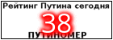

На этой страничке я собираю доказательства того, что Путин - это Бог.
Доказательства эти публиковались в серьезных СМИ, а чтобы не было сомнений
я всегда указываю ссылку на источник. Список цитат постоянно увеличивается,
так что сделайте закладочку и возвращайтесь иногда.
Несмотря на то, что Владимира Путина вновь не пригласили на саммит G7,
который проходил в баварском замке Эльмау, российский президент тем не
менее незримо присутствовал на переговорах лидеров стран "Большой
семерки".
La Nacion, Аргентина
http://inosmi.ru/world/20150609/228475781.html
Некоторые обозреватели говорят, что у Путина нет лица, нет материальной
сущности, нет души. Он человек из ниоткуда, который может показаться нам и
любому другому человеку кем угодно.
Foreign Policy, США
http://inosmi.ru/russia/20130218/206050923.html
Владимир Путин присутствовал будто призрак на пиру в тот момент, когда
лидеры Евросоюза пытались спасти политику "партнерства".
The Times, Англия
http://www.oilru.com/news/463129/
Как только вы подумали о Путине, он уже победил.
Bloomberg, США
http://inosmi.ru/world/20150711/229030003.html
В своей замечательной книге "Г-н Путин" Фиона Хилл и Клиффорд Гэдди
насчитали шесть Владимиров Путиных.
The Wall Street Journal, США
http://inosmi.ru/politic/20151204/234687716.html
Для этого Керри потребуется избавиться тех чар, которыми Путин его околдовал.
The American Interest, США
http://inosmi.ru/politic/20151213/234782280.html
Опубликованные в сети фотографии подтверждают, что нынешний президент России
живет уже несколько сотен лет, однако правда может оказаться гораздо более
зловещей.
The Independent, Англия
http://inosmi.ru/social/20151217/234833323.html
Законы природы на Путина не действуют.
Frankfurter Rundschau, Германия
http://inosmi.ru/politic/20151222/234886686.html
Путин, который не подвержен старению и способен путешествовать во времени,
живет на нашей планете сотни, а то и тысячи лет. Другие предполагают, что
Путин - это родившийся в 1431 году господарь Валахии Влад Цепеш, более
известный как граф Дракула.
Infobae, Аргентина
http://inosmi.ru/overview/20151221/234862097.html
Украинский чиновник уверен, что Путин спустился с небес. (видео, фрагмент
выступления)
Администрация Херсона (быв. Украина)
http://vk.com/video216672294_456239018
Путин околдовывает россиян.
Politico, Испания
http://inosmi.ru/politic/20111006/175645962.html
Чтобы преуспеть, избранный президент должен увидеть, что на самом деле
существует два Путина.
The New York Times, США
http://inopressa.ru/article/28Nov2016/nytimes/trump_putin1.html
Будет ли Путин править вечно?
Радио "Свобода", США
http://www.svoboda.org/a/28262835.html
Владимир Путин: волшебник, которому все под силу
Tageszeitung, Германия
https://www.inopressa.ru/article/16Jun2017/taz/putin_04.html
Речь идет о втором штурме Иерусалима, спустя несколько лет после
установления власти Христа (вполне можно поверить, что в это время Владимир
Путин все еще будет возглавлять это воинство).
The Trumpet, США
http://inosmi.ru/longread/20170717/239815396.html
У каждого появился свой собственный, личный Путин...
... Это просто поразительно! То, что не существует настоящего, реального Путина,
превратилось в весомый политический капитал. Путин может быть всем для всех.
Wiener Zeitung. Австрия
https://inosmi.ru/politic/20190222/244622022.html
Последователи одной из сект считают Путина реинкарнацией раннехристианского
миссионера апостола Павла.
Project Syndicate, США
https://inosmi.ru/politic/20190130/244487888.html
На Западе бродит призрак. Он небольшого роста, очевидно, прошедший через ряд
косметических операций, и имя ему Владимир. Этот призрак виноват во всём, что
на Западе идёт не так.
Der Spiegel, Германия
https://russian.rt.com/inotv/2017-12-10/Der-Spiegel-prizrak-Putina-stal
Тереза Мэй пытается спасти Британию, вызывая дух Путина
РИА Новости
https://ria.ru/20171115/1508841444.html
Ранее издание BuzzFeed уже представляло доказательство того, что Путин недолго жил в
образе Лизы дель Джокондо - модели Леонардо да Винчи, запечатленной им на картине
"Мона Лиза".
RT, Россия
https://russian.rt.com/inotv/2015-12-16/Daily-Mail-Putin-libo-bessmertnij
Призрак Путина преследует Лукашенко везде, где бы он не оказался.
Знай, Украина
https://znaj.ua/ru/politics/267406-lukashenko-nazvav-ukrajinu-rosiyeyu-i-yomu-prividivsya-putin-ya-zlyakavsya
Дух Владимира Путина витает над штаб-квартирой НАТО в Брюсселе.
Svenska Dagbladet, Швеция
https://inosmi.ru/politic/20210614/249912783.html
Воображение Запада преследует мифологическое чудовище. Его название произносится
американскими СМИ и политическим истеблишментом как "Пут'н" У него тело медведя,
руки осьминога и голова сверхразумного инопланетянина
The Nation, США
https://inosmi.ru/20220201/putin-252812123.html
Тень Путина способна перемещаться независимо от хозяина. Свидетельства
очевидцев
Президент Владимир Путин остается вездесущей фигурой мировой политики,
и это даже не требует его физического присутствия. Тень Владимира Путина
будет сопровождать дебаты Генеральной Ассамблеи ООН
Le Monde, Франция
https://inosmi.ru/20220919/oon-256198716.html
Китайский председатель Си Цзиньпин приехал в Европу. Его сопровождает тень Путина
BBC, Англия
https://www.bbc.com/russian/articles/cyrl26dpnv2o
Тень Путина на президентских выборах в США
Немецкая волна, ФРГ
https://www.dw.com
Тень Путина над Дрезденом
Le Figaro, Франция
https://www.rfi.fr/ru/rossiya/20180219-reportazh-le-figaro-ten-putina-nad-drezdenom
Тень Путина на вилле Порто-Черво
L'Unione Sarda, Италия
https://www.unionesarda.it
Тень Путина нависла над Финляндией
Guardian, Англия
https://inosmi.ru/20060615/228163.html
Тень Путина в Украине
"ТВ Дождь" Голландия
https://tvrain.tv/teleshow/fishman_vechernee_shou/ten_putina_v_ukraine-529997

Назад|На главную